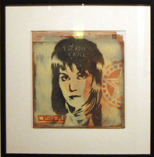

Joan Jett And The Blackhearts (Redirected from Joan Jett)
From The Giant: The Definitive Obey Giant Site
From Wikipedia:
Joan Jett (born Joan Marie Larkin on September 22, 1958 in Philadelphia, Pennsylvania) is an American rock and roll guitarist, singer, and actress best known for her hit "I Love Rock 'N Roll," which was #1 on the Billboard charts from March 20 to May 8 of 1982.
Career and biography
Joan Jett was born in Philadelphia. She later moved to Hollywood, California, where, when still in her teens, she first gained attention as the guitarist, main songwriter, and back-up singer in the pioneering all-women band The Runaways, known for pre-punk hard rock and the classic song "Cherry Bomb." Once lead singer Cherie Currie left the band, Joan assumed the duties of lead vocalist. Although the band was misconstrued in the U.S. as a novelty act, they were more popular in Japan.
After the Runaways disbanded in 1979, Jett produced an album for Los Angeles punk rock band, The Germs, then embarked on a solo career. Although she approached many labels, not one would sign her due to the stigma that accompanied her former band, The Runaways, and so she and manager and co-writer Kenny Laguna created their own independent record label, Blackheart Records, to release recordings by her new band distributed by Boardwalk Records, Joan Jett and the Blackhearts.
With the Blackhearts, she had several singles in the top ten, including the #1 "I Love Rock 'N Roll" cover, originally by The Arrows, as well as covers of Tommy James' "Crimson and Clover" and Gary Glitter's "Do You Wanna Touch Me." "Bad Reputation," whose accompanying video narrates the story of the rejection of Joan by major labels and the creation of her own record label, was also a hit. During this time, Jett toured relentlessly. One of the highlights of her live performance is the cover of the AC/DC song "Dirty Deeds Done Dirt Cheap." Unfortunately, Boardwalk Records went under after the death of its founder Neil Bogart, and Jett and Laguna never received the money they were owed from the massive hit "I Love Rock'n Roll."
After making the two classic albums on Blackheart Boardwalk, Jett and Laguna signed to MCA Records and released the Gold-certified Album and the critically acclaimed Glorious Results of a Misspent Youth. 1986's Good Music was released for new label, CBS, followed by the multiplatinum Up Your Alley, which featured collaborations with noted producer/songwriters Desmond Child and Ric Browde. The follow-up, The Hit List, an album of all covers, featured the top-40 hit "Dirty Deeds."
The Hit List was followed by Notorious in 1991, which included a collaboration with Paul Westerberg called "Backlash." Finally, in 1992, Joan Jett and the Blackhearts' first four albums were reissued for the first time on compact disc. In 1993, the retrospective Flashback was released on Blackheart Records. It collected oddities and rarities from the band's back catalog of hard to find b-sides and bonus tracks. Joan signed with Warner Bros. Records and released the riot grrrl inspired Pure And Simple in 1994, which featured the riot grrrl anthem "Activity Grrrl." Evil Stig, a project to raise funds to pay a private investigator to find Mia Zapata of The Gits' killer followed in 1995. Management changes with Warner Bros. delayed the highly anticipated follow-up to Pure And Simple, tentatively titled Friend To Friend or Headlock. Joan Jett and the Blackhearts did release one other single through Warner Bros. called "Love Is All Around." It was released in 1996 to promote women's college basketball.
1997 brought the first USA greatest hits release through Mercury Records called Fit To Be Tied great hits by Joan Jett and the Blackhearts. Mercury Records also released the 1999 compilation album Fetish, a collection of sexual adventurous songs from the past, plus three unreleased songs "Baby Blue," "Fetish," and "Black Leather." Many of the songs delayed in the late '90s through the management shuffles at Warner Bros. were released in 2004 on the Japanese only album Naked. The title track "Naked" was co-written with Rudy Yuly, former lead singer of Tiny Hat Orchestra. In 2006, Joan Jett released her first album of new music in 12 years called Sinner in the U.S. She and Laguna currently host a radio program on Sirius satellite radio.
In 2002, Joan Jett was given the Obey treatment, as Shepard released Joan Jett Pop and Joan Jett Pink, both based on the cover to the #1 hit single "I Love Rock N' Roll," released in 1982 by Joan Jett and the Blackhearts.
 |
{kind=link}
{kind=link}
{kind=link}
{kind=link}
© Copyright |
|---|
| This page contains an image or images of drawings, paintings, photographs, prints, or other two-dimensional works of art, for which the copyright is presumably owned by either the artist who produced the image, the person who commissioned the work, or the heirs thereof. It is believed that the use of low-resolution images of works of art for critical commentary on the work in question, the artistic genre or technique of the work of art, or the school to which the artist belongs on the English-language website thegiant.org, hosted on servers in the United States, qualifies as fair use under United States copyright law. |